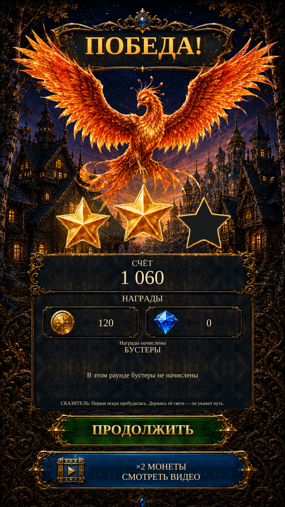

Victory · original reference rebuild R1Victory · original reference rebuild
The selected navy title, spread-wing Firebird, source stars and separate reward rows now form the native Victory screen. Actual score, earned rewards and existing actions remain live.
Native views are actual Unity captures with isolated test saves. Reference amounts and unsupported sample items are not granted. The bonus fixture tests the reward domain; it is not a successful live ad.
